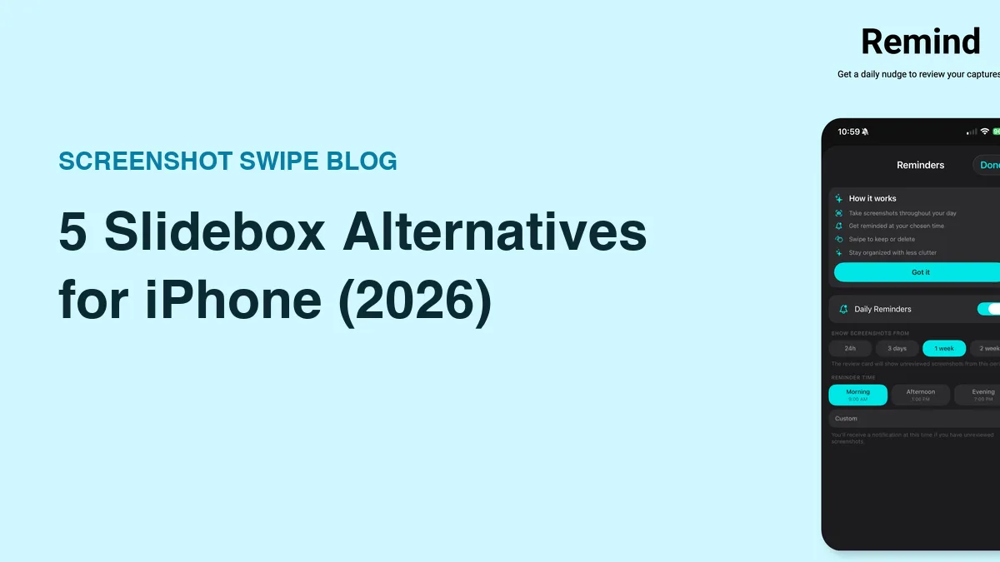

5 Slidebox Alternatives for iPhone (2026)

Quick answer: Swipewipe is the closest whole-library Slidebox replacement with a more modern experience. Screenshot Swipe is the pick if your triage is mostly screenshots, adding OCR search, notes, and tags. CleanMy®Phone wins for duplicates and storage, Slider adds videos, and Slidebox itself is still worth keeping for free album sorting.
Slidebox combines swipe-to-trash review with album sorting. It is free to download and offers paid options; check the current purchase screen before choosing a plan.
Different organizers suit different jobs. If you want screenshot notes, scheduled follow-ups, or another cleanup workflow, compare those needs directly. Our updated Slidebox review covers its current release and purchase options.
Disclosure: Screenshot Swipe is our app. Ratings were pulled from the iTunes API on July 18, 2026.
What does Slidebox still do best?

Slidebox's signature move: filing into albums is as fast as deleting.
Platform: iOS App Store · slidebox.co · Rating: 4.8 ★ (16,246 ratings)
Before switching, be clear about what you'd give up. Album sorting during triage is still Slidebox's unmatched feature — one tap files a photo into Family or Work as fast as a swipe deletes it. Nothing below fully replicates that, and the core app remains free.
Switch when you need what it lacks: search, screenshots-as-information, duplicate detection, or a modern interface.
1. Screenshot Swipe — best if your pile is mostly screenshots

Same swipe triage, but keeps get OCR, notes, and tags.
Platform: iOS App Store · Price: Free, optional Pro for AI Smart Review · Rating: 5.0 ★ (5 ratings)
Slidebox treats a screenshot like any photo. Screenshot Swipe treats it as saved information: keeping one attaches an optional note, tags, and a reminder, and everything you keep gets on-device OCR so you can full-text search it later. Tags sync back to Photos albums, which is the closest thing on this list to Slidebox's filing workflow.
It's the narrowest tool here — screenshots only, and it's new (five ratings). If your mess is regular photos, keep reading.
2. Swipewipe — best whole-library replacement

Monthly decks turn an unfinishable backlog into daily wins.
Platform: iOS App Store · Price: Free with daily limit, premium for unlimited · Rating: 4.7 ★ (82,247 ratings)
The most popular app in the category, and the most direct upgrade path. Swipewipe's monthly decks, streaks, and "On This Day" reviews give the cleanup job a structure Slidebox never had — you clear one month at a time instead of facing the whole library.
You lose album filing and the fully-free model: heavy sessions hit the daily swipe cap unless you subscribe. We compared it head-to-head with our app in Swipewipe vs Screenshot Swipe.
3. CleanMy®Phone — best for duplicates and storage

Category scans — duplicates, similar shots, largest videos — instead of swiping.
Platform: iOS App Store · Price: Free trial, then subscription · Rating: 4.6 ★ (22,643 ratings)
A different philosophy: instead of you swiping through everything, MacPaw's scanner clusters duplicates, near-identical "similar shots," blurry photos, and giant videos, and you clear whole categories at once. For pure storage recovery it's the fastest tool on this list.
There's no triage gesture and no organization layer, and the subscription is only worth it if you'll run whole-library cleanups a few times a year.
4. Slider — best if videos eat your storage
A live gigabyte counter makes every delete feel like progress.
Platform: iOS App Store · Price: Free with daily limit, premium for unlimited · Rating: 4.8 ★ (10,107 ratings)
Slidebox and Swipewipe are photo-first. Slider gives videos the same swipe treatment, with a running storage counter that shows gigabytes reclaimed as you go. Ten minutes of 4K video outweighs a thousand screenshots, so if storage is the real complaint, this addresses the biggest files first.
Like Swipewipe, no search or filing features, and the free tier caps daily deletes.
5. Apple Photos itself — best free baseline
Worth naming because it quietly absorbed part of Slidebox's job. Modern iOS auto-detects duplicates (Albums → Utilities → Duplicates → Merge), the Screenshots album isolates screenshots for bulk deletion, and Clean Up suggestions surface junk. It's nobody's favorite triage experience, but it's already on your phone and covers the basics — here's the fastest built-in workflow.
How do the alternatives compare?
| Feature | Screenshot Swipe | Swipewipe | Slidebox | CleanMy®Phone | Slider |
|---|---|---|---|---|---|
| Fully free core | Yes | Daily limit | Yes | No | Daily limit |
| Album filing / tags | Tags + album sync | No | Albums | No | No |
| OCR text search | Yes, on-device | No | No | No | No |
| Duplicate finder | No | No | No | Yes | No |
| Video cleanup | No | Yes | Yes | Yes | Yes |
| Modern UI | Yes | Yes | Dated | Yes | Yes |
| Rating (Jul 2026) | 5.0 ★ (5) | 4.7 ★ (82k) | 4.8 ★ (16k) | 4.6 ★ (23k) | 4.8 ★ (10k) |
Frequently asked questions
What is the best alternative to Slidebox?
Swipewipe is the closest whole-library replacement with a more modern experience. Screenshot Swipe fits better if most of your triage is screenshots, adding OCR search and tags. CleanMy®Phone is stronger for duplicates, and Slider adds video cleanup.
Is Slidebox still maintained?
Yes. Apple’s US lookup API showed version 26.913.0, released September 18, 2026, when checked on September 21. See the current App Store version history when comparing it with another organizer.
Is Slidebox free?
Slidebox is free to download with in-app purchases. Its current description advertises subscription and one-time purchase options. Check the limits and offer shown in your version before assuming all features are free.
Can these apps sort photos into albums like Slidebox?
Mostly no — filing during triage is Slidebox's signature. Screenshot Swipe comes closest for screenshots, since its tags sync to Photos albums automatically. The others focus on keep-or-delete.
Picking your replacement
- Name the thing Slidebox isn't doing for you. Search? Screenshots? Duplicates? Videos? The gap picks the app.
- Keep Slidebox for filing if album sorting is your workflow — none of these fully replace it, and they coexist fine.
- Trial before subscribing. Every alternative has a free tier; run your normal week through it before paying.
- Whatever you pick, review weekly. Ten to thirty items a week takes two minutes; a year's backlog takes an evening.
Try a review with your own screenshots.
Screenshot Swipe is free to start. Keep useful captures with notes, tags, and reminders. Start with the free manual review features.
Download on theApp Store